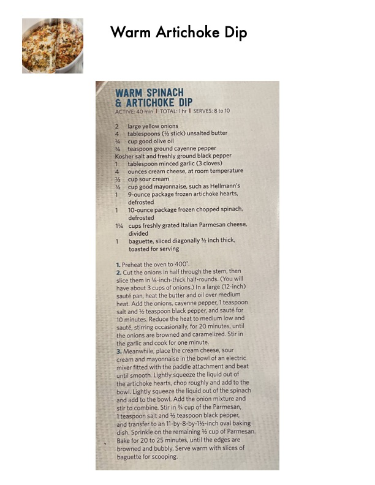

Warm Artichoke Dip

Original cookbook page 246
Ingredients
- 4 ounces cream cheese, at room temperature
- 1 baguette, sliced diagonally % inch thick,
- 10 minutes. Reduce the heat to medium low and
- 1 teaspoon salt and % teaspoon black pepper,
Instructions
- Preheat the oven to 400°. Cut the onions in half through the stem, then slice them in %-inch-thick half-rounds. (You will sauté pan, heat the butter and oil over medium heat. Add the onions, cayenne pepper, 1 teaspoon sauté, stirring occasionally, for 20 minutes, until Meanwhile, place the cream cheese, sour cream and mayonnaise in the bowl of an electric stir to combine. Stir in %4 cup of the Parmesan, Bake for 20 to 25 minutes, until the edges are
Recipe #246 from collection